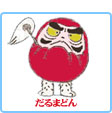
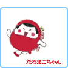
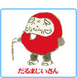
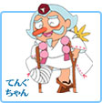
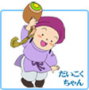
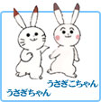

子供の頃、おとうさんやおかあさんに読んでもらった人。 今、子供たちに読んであげている、おとうさん、おかあさん。 2世代に渡って親しまれてきた、あの『だるまちゃんシリーズ』がかわいいアニメになりました。
かわいくて、たのしくて、そしてどこかなつかしい日本の四季おりおりに繰り広げられる元気いっぱいのだるまちゃんワールドをご紹介します。
絵本作家 加古里子先生の「だるまちゃんとてんぐちゃん」をはじめとする絵本「だるまちゃんシリーズ」をだるまちゃんワールドをあにまる屋が、心をこめて「アニメ」にしました。子供達にはたのしくてゆかいな、大人たちにはどこかなつかしい、そんなほのぼのアニメです。
主人公のだるまちゃんは、かわいくてとっても元気な男の子です。
アニメ「だるまちゃんシリーズ」は「作る人が見てくれる人に直接手渡すこと」を 理想として制作しています。したがってすべてにおいて手作りの姿勢でやっています。
子供たちはテレビゲームや、ビデオや、まんががだいすきです。でも、本当にすきなのは、昔も今も、友達と外で暗くなるまで真っ黒になって遊ぶことです。
「だるまちゃんシリーズ」は、内容的にも、派手なアクションや難しいテーマはなく、 ひたすら、たあいのない子供の好奇心や、友達との遊びの世界をえがいています。
そんなほのぼのとした子供の世界が、競争を強いられた今の子供達のこころに 伝わってくれれば最高です。
|  | わしはだるまどん。といってもだるまのどんぶりじゃないよ。だるまちゃんと、だるまこちゃんのお父さんだ。よろしくな。 |
わたしはだるま母さんよ。お料理だったらまかせてね。おなかすかせて、帰っていらっしゃい。 |
|
|  | あたしだるまこちゃん。おままごとだぁいすき。 |
|  | ワシはだるまじいさんじゃ。ひなたぼっこと、 |
ワタシはだるまばあさんですよ。お針仕事は十八番。差朝、何を塗ってあげましょうかね。 |
|
てんぐちゃんのもっているものはみんなかっこいいんだよ。だるまちゃんたら、全部ほしくなっちゃった。そうそう、交通安全の巻では足をけがしちゃったんだ。大丈夫かなあ。 |
|
|  | かみなりちゃんのかみなり国はくるまも、ビルも、 |
とらのこちゃんのしましまもようはとってもすてき。いろんなペンキでいろんなものにすてきな色をぬっちゃおう！だるまちゃんもしましまもようになっちゃった。 |
|
|  | だいこくちゃんのこづちはとってもふしぎだよ。 |
|  | うさぎちゃんとうさこちゃん、雪の日のそとはとってもさむいけど、うさぎちゃんとうさこちゃんは元気いっぱい。雪だるまを作ったり、雪うさぎを作ったりいーっぱい遊んだね。 |
１９２６年（大正１５年）福井県武生市に生まれ、東京大学工学部応用化学科に学ぶ。卒業後は民間企業に勤務するかたわら、セツルメント活動（子供会のボランティア） に従事し、紙芝居、幻灯などの作品を作る。
１９５９年「だむのおじさんたち」を作り絵本作家としての道にすすむ。
作品数は「だるまちゃんシリーズ」ほか５００点。
神奈川県在住。工学博士。１９７３年、勤務先退社。
現在も、紙芝居の制作、講演など、精力的に活動なさっています。